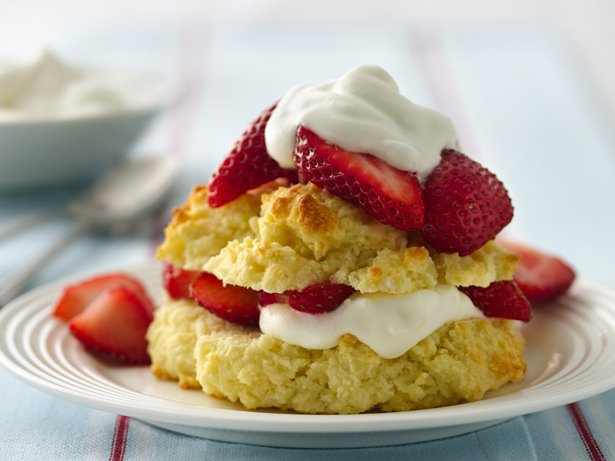

Gluten Free Strawberry Shortcakes

Gluten-Free Bisquick Mix makes it easy for you to enjoy a classic dessert - strawberry shortcake.
Ingredients
- 4 cups (1 qt) strawberries, sliced
- 1/2 cup sugar
- 2 1/3 cups Bisquick® Gluten Free mix
- 1/3 cup butter or margarine
- 3/4 cup milk
- 3 eggs, beaten
- 1/2 teaspoon vanilla
- 3/4 cup whipping cream, whipped
Steps
- In small bowl, mix strawberries and 1/4 cup sugar; set aside.
- Heat oven to 425°F. Grease cookie sheet. In medium bowl, combine Bisquick mix and remaining 1/4 cup of the sugar; cut in butter with pastry blender or fork. Stir in milk, eggs and vanilla. Drop by 6 spoonfuls onto cookie sheet.
- Bake 10 to 12 minutes or until light golden brown. Cool 5 minutes. With serrated knife, split shortcakes; fill and top with strawberries and whipped cream.